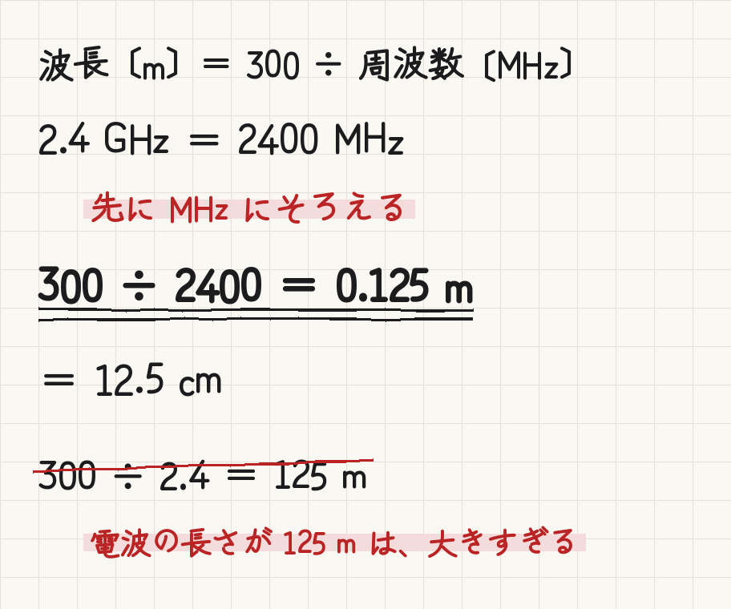

波長の計算：2.4 GHz は 12.5 cm。300 ÷ 周波数で桁がずれる所
2.4 GHz の電波の波長は 12.5 cm（0.125 m）です。波長は「300 を周波数で割る」と覚えると速く出せますが、この覚え方には、書かれていない条件が1つあります。周波数を MHz で入れることです。そこを落とすと、答えが1000倍ずれます。
どこで止まるか
「300 ÷ 周波数」は、MHz のときだけ
元の式は、波長 ＝ 電波の速さ ÷ 周波数 です。電波の速さは、1秒に 3 × 108 m です。
周波数を MHz で表すと、1 MHz ＝ 106 Hz なので、108 と 106 が約分されて、300 が残ります。
2.4 GHz は、MHz に直すと 2400 MHz です。
単位の頭の文字を、10の何乗に直す
| 文字 | 読み | 10の何乗 |
|---|---|---|
| G | ギガ | 109 |
| M | メガ | 106 |
| k | キロ | 103 |
| m | ミリ | 10−3 |
| μ | マイクロ | 10−6 |
| n | ナノ | 10−9 |
| p | ピコ | 10−12 |
10の何乗どうしは、掛け算なら右肩の数を足し、割り算なら引きます。元の式のまま計算しても、同じ答えになります。
数値で確かめる
答えが出たら、大きさの見当と比べます。150 MHz の波長は 300 ÷ 150 ＝ 2 m。この電波に使う4分の1波長のアンテナは、2 ÷ 4 ＝ 0.5 m です。手で持てる長さの棒になります。
周波数が高いほど、波長は短くなります。GHz の電波で、波長が何十 m にもなったら、桁を疑います。

波長と周波数の式のまとめ
波長 [m] ＝ 0.3 ÷ 周波数 [GHz]
波長 [m] ＝ 300000 ÷ 周波数 [kHz]
150 MHz なら 2 m、3 GHz なら 0.1 m（10 cm）、1000 kHz なら 300 m です。ほかの周波数は、周波数と波長の対応表で引けます。元の式は、波長 ＝ 電波の速さ（3 × 10⁸ m/s）÷ 周波数 [Hz] です。
別の呼び方：波長は λ（ラムダ）、周波数は f、電波の速さ（光速）は c と書かれ、λ ＝ c ÷ f の形で出てきます。アンテナの長さの「2分の1波長」「4分の1波長」は、この波長を2や4で割った長さです。
5 GHz の電波の波長は、何 cm ですか。
答え
5 GHz ＝ 5000 MHz。300 ÷ 5000 ＝ 0.06 m ＝ 6 cm。紙の上で繰り返して固めたい方へ：書き込み式の問題集の案内 ／ 数を入れて確かめる：デシベルの計算の道具
最終更新：2026年11月20日